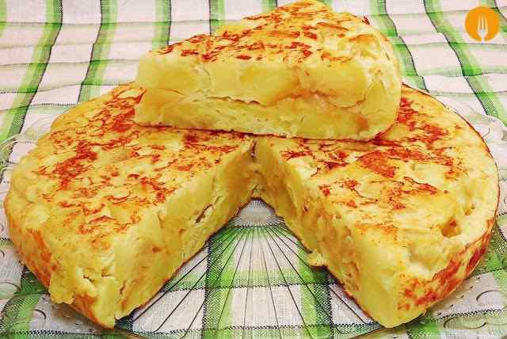

Recetas de la abuela
Como en casa en ningún sitio!
Como en casa en ningún sitio!
|  | |
| Ingredientes | Cantidad |
|---|---|
| Huevos | 4 |
| Patatas | 3 de tamaño mediano |
| Cebolla | Un trozo pequeño |
| Aceite de oliva | Lo suficiente para freir las patatas |
| Sal | Un poco |
Pelamos las patatas, las lavamos para quitar restos de suciedad y muy importante, las secamos. Cortamos en láminas semifinas, a mí no me gusta que se deshagan sino que al freírlas se tuesten un poco. Las colocamos en un bol grande, donde luego vamos a mezclar con el huevo y añadimos sal al gusto. Removemos bien y reservamos. Elegimos nuestra sartén más grande y antiadherente. La ponemos al fuego y añadimos un buen aceite de oliva virgen extra. No tengáis miedo en gastaros un poco de dinero en aceite, le va a dar ese punto de sabor que distingue vuestra tortilla de las demás, podéis emplear muchas variedades: arbequina, picual, cornicabra, hojiblanca, royal… el que más os guste, pero de calidad. Introducimos las patatas cortadas y ya saladas y dejamos que se cocinen durante aproximadamente veinte minutos a fuego bajo. El tema del grosor de las patatas también va a gustos. Hay quien prefiere cortarlas a trozos muy pequeños, en láminas muy finas que casi se rompan al freír y o más bien grandes. Mientras se están friendo las patatas, en el bol donde luego vamos a echar las patatas batimos los huevos, reservamos. Pelamos la cebolla y cortamos lo más fino posible. En otra sartén calentamos aceite de oliva y añadimos los trozos de cebolla. Pochamos hasta que tenga un color dorado, que tenga un punto de caramelización pero sin llegar a quemarse. La cebolla se hará antes que las patatas, así que escurrimos y añadimos al bol con el huevo batido.